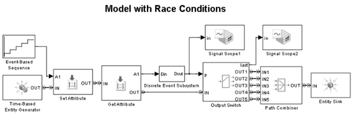

Managing Race Conditions
Contents
Overview
For SimEvents® blocks having both signal input ports and entity input ports, when signal updates and entity arrivals occur at the same time and as the result of executing the same event, the relative sequence influences the behavior of the block. In SimEvents, this situation is referred to as a signal/entity race condition.
This tutorial demo introduces race conditions, their impacts on simulation results, and ways to manage them using diagnostic features.
An Example Model
Consider routing entities based on a computation involving an attribute of each entity. In this model, the routing algorithm is implemented in the Discrete Event Subsystem block, which executes when an entity causes the Get Attribute block to update its A1 signal. The computation result is used by the Output Switch block to make routing decision for the entity.
open_system('sedemo_race_condition_diagnose');
 Diagnosing Race Conditions
Diagnostic features can help you identify race conditions in a model. These features analyze the model when you run the simulation and display a warning or an error message for each race condition identified.
To configure the diagnostic features, select Simulation > Configuration Parameters in the model window, navigate to the SimEvents Diagnostics pane, and configure the dialog items in the Race conditions group.
For this model, enable the diagnostic feature by selecting warning for the parameter Attribute output delayed relative to entities. Alternatively, execute the following command in the MATLAB® Command Window.
set_param('sedemo_race_condition_diagnose','propDiagAttribOutput',1);
Run the simulation. A warning message appears in the MATLAB Command Window indicating the presence of the race condition, possible consequence, and a way to fix it.
sim('sedemo_race_condition_diagnose');
Race condition detected between 'sedemo_race_condition_diagnose/Get Attribute' and 'sedemo_race_condition_diagnose/Output Switch'. The former block causes attribute signal updates during entity advancement, but the latter block responds to such signal updates after the entity has arrived. This may cause the latter block to process the entity using outdated signal values. To avoid this, between the two blocks, please insert a Single Server block with a service time of 0. You can disable this diagnostic by setting 'Attribute output signal delayed relative to entities' diagnostic to 'none' in the SimEvents Diagnostics tab of the Configuration Parameters dialog.
Understanding Signal/Entity Race Conditions
Simulation results indicate that the Output Switch block does not route entities to the expected paths. The sequence of entities are expected to depart from entity output ports 1, 2, 3, 4 and 5 respectively (see plot Computed Port Selection). However, as shown by plot Port Selection of Output Switch, these entities actually depart from output ports 5, 1, 2, 3 and 4, with the port selection for the first entity being the initial value specified in the mask dialog of the Output Switch block. The Output Switch block is making a routing decision for an entity using the computed route for the previous entity.
The simulation result is not as expected because this model contains a signal/entity race condition at the input ports of the Output Switch block. As the result of executing an entity generation event in the Time-Based Entity Generator block, the Get Attribute block advances an entity to the Output Switch block and updates the signal at the A1 port. This update causes the Discrete Event Subsystem to execute and causes the signal value at the p port of the Output Switch block to be updated at the same instant of time.
The Get Attribute block is designed to update output signals after an entity has departed from the block and arrived at the destination storage block. This implies that when an entity arrives at the Output Switch block, the signal at the p port has not yet been updated, so the switch uses the computed route for the previous entity.
Resolving Race Conditions
Signal/entity race conditions can be removed by inserting a Single Server block with Service time parameter set to 0 between the block that initiates both entity advancement and signal updates, and the block that immediately receives the entity and the signal updates.
For the previously shown model, after a Single Server block is added, the Get Attribute block advances an entity to the Single Server block when an entity generation event is executed. The Get Attribute block then updates the signal at A1 port, causing the execution of the Discrete Event Subsystem block and a signal update at p port of Output Switch block. The entity, stored in Single Server block, does not depart until the execution of the service completion event of the block.
Upon service completion at the Single Server block, the entity advances to the Output Switch block. By then, input signal at the p port of the Output Switch block has already been updated with the computed value.
With the race condition removed, the Output Switch block correctly uses the computed route for each entity.
bdclose('sedemo_race_condition_diagnose'); open_system('sedemo_race_condition_resolve'); sim('sedemo_race_condition_resolve');
Desirable Race Conditions
Race conditions can sometimes help your modeling work once you understand the signal/entity update sequence.
For example, this model attaches an attribute INDEX to each entity to indicate how many prior entities have been created. In this case, we can make use of the signal/entity race condition at the input ports of the Set Attribute block, and the fact that the Time-Based Entity Generator block updates the signals at the #d port after an entity has departed and arrived at a storage block. We can connect the #d port to the Set Attribute block directly to derive the results we need. This can be verified by viewing the value of attribute INDEX as shown in plot Value of Attribute INDEX.
bdclose('sedemo_race_condition_resolve'); open_system('sedemo_race_condition_desirable'); sim('sedemo_race_condition_desirable');
Suggested Workflow
When building a model, you may want to turn on the race condition diagnostic features and let them help you identify the race conditions in your model. Once you are satisfied with your model, and have confirmed that there are no undesirable race conditions, you may choose to disable race condition diagnostic features.
bdclose('sedemo_race_condition_desirable');